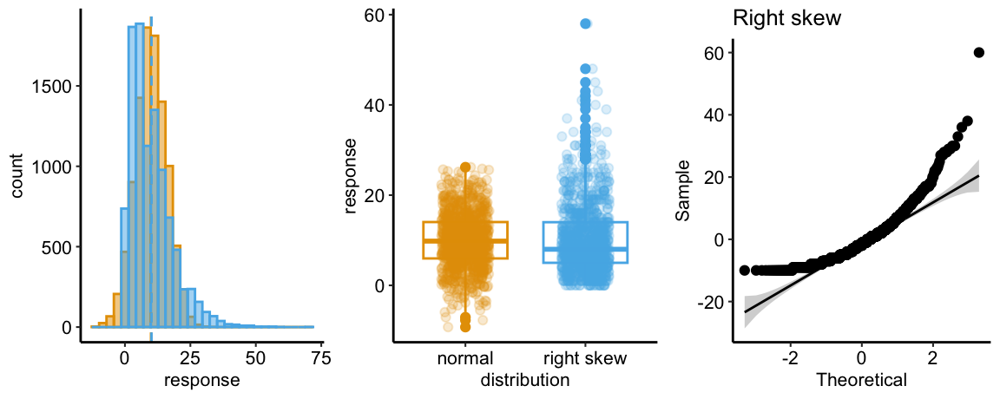

Chapter 8 A linear model with a single, categorical X
8.1 A linear model with a single, categorical X estimates the effects of X on the response.
To introduce modeling with a single, categorical \(X\) variable, I’ll use the [Vole data] from Chapter 2. Normal cellular metabolism creates reactive oxygen species (ROS) that can disrupt cell function and potentially cause cell damage. Anti-oxidants are molecules that bind ROS, inhibiting their ability to disrupt cell activity. A working hypothesis for many years is that supplemental anti-oxidants should improve cell function and, scaling up, whole-animal function (such as lifespan). The vole data explores this with supplemental Vitamins C and E, which are anti-oxidants, in the diet of the short-tailed field vole (Microtus agrestis).
The goal of the study is to measure the effect of anti-oxidants on lifespan. The researchers randomly assigned the voles to one of thre treatment levels: “control”, “vitamin E”, and “vitamin C”. The variable \(treatment\), is a single, categorical \(X\) variable. Categorical variables are often called factors and the treatment levels are often called factor levels. “Levels” is a strange usage of this word; a less formal name for levels is “groups”. There are no units to a categorical \(X\) variable (even though a certain amount of each anti-oxidant was supplemented). The response (\(Y\)) is \(lifespan\) measured in days.
The linear model with a categorical \(X\) variable with three levels is not immediately obvious, and so I don’t present the model until after showing the table of model coefficients. The verbal model is
\[\begin{equation} lifespan \sim treatment \end{equation}\]
which can be read as “lifespan as a function of treatment”.
8.1.1 Table of model coefficients
The table of coefficients from a linear model fit to some data is critically important for understanding a linear model and interpreting results. Read this section carefully. The coefficient table for a linear model fit to the vole data is
| Estimate | Std. Error | t value | Pr(>|t|) | |
|---|---|---|---|---|
| (Intercept) | 503.4 | 27.4 | 18.4 | 0.000 |
| treatmentvitamin_C | -115.1 | 54.5 | -2.1 | 0.037 |
| treatmentvitamin_E | -89.9 | 52.5 | -1.7 | 0.090 |
The table has three values in the column “Estimate”. The first estimate, that for “(intercept)” is the mean response in the reference level. Here, the reference level is the “control” group. The second estimate, that for “treatmentvitamin_C” is the difference between the mean of the vitamin C group and the the mean of the reference (control) group. The direction of this difference is important; it is \(\bar{Y}_{vitamin\_c} - \bar{Y}_{control}\), that is the non-reference level minus the reference level. The third estimate, that for “treatmentvitamin_E” is just like the second estimate, except for the vitamin E group. That is, it is \(\bar{Y}_{vitamin\_e} - \bar{Y}_{control}\). The 2nd and 3rd values in the “Estimate” columns are the “effects” in the model. These effects are “what happens” when we add a treatment, such as vitamin E supplementation. When we add the vitamin E supplement, we find the lifespan changes by -89.9 days, relative to the control.
So typically with categorical \(X\), when we speak of an effect we mean a difference in means, or a contrast.
Figure 8.1: What the coefficients of a linear model with a single categorical X mean. The means of the three treatment levels for the vole data are shown with the filled circles. The length of the double-headed arrows are differences in means. The intercept (\(b_0\)) is the mean of the reference treatment level. The coefficients (\(b_1\) and \(b_2\)) are the differences between the treatment level’s mean and the reference mean. As with a linear model with a continuous X, the coefficients are effects.
8.1.2 The linear model
We can see an immediate difference between the coefficient table for a linear model fit to a single, categorical \(X\) and that for a single, continuous \(X\). For the latter, there is a single coefficient for \(X\). For the former, there is a coefficient for each level of the categorical \(X\) except the “reference” level.
The linear model for a single, categorical \(X\) with three factor levels is
\[\begin{equation} Y = \beta_0 + \beta_1 X_{group2} + \beta_2 X_{group3} + \varepsilon \end{equation}\]
where \(group2\) and \(group3\) refer to the two non-reference groups.
For the vole data, “control” is the reference, so the model is
\[\begin{equation} lifespan = \beta_0 + \beta_1 vitamin\_C + \beta_2 vitamin\_E + \varepsilon \end{equation}\]
The “estimates” in the coefficient table are the estimates of the parameters in this linear model. These estimates are the coefficients of the fit model,
\[\begin{equation} lifespan_i = b_0 + b_1 vitamin\_C_i + b_2 vitamin\_E_i + e_i \tag{8.1} \end{equation}\]
Given the interpretation of the estimates above, \(b_0\) is the mean of the control group, \(b_1\) is the difference in means between the vitamin C and control groups, and \(b_2\) is the difference in means between the vitamin E and control groups. These estimates and their meaning are illustrated in Figure 8.1. Take a while to memorize the bold-faced sentence above equation (8.1) and to understand this plot. Be able to “visualize” the meaning of the coefficients of a linear model in this way.
8.1.2.1 A linear model with a categorical X is a regression model with the treatment levels re-coded as numbers
Model (8.1) is a regression model. A regression model requires that the \(X\) variables be numeric, so how can this model be a regression model? What are the numeric values of \(vitamin\_C\) and \(vitamin\_E\)? The answer is very clever: \(vitamin\_C\) and \(vitamin\_E\) are recoded into dummy variables that contain a one, if response \(i\) is from that treatment level, and zero otherwise. This is called dummy coding or treatment coding. The lm function creates these dummy variables under the table, in something called the model matrix, which we’ll cover in another chapter. You won’t see these columns in your data. But if you did, they would look like this
| lifespan | treatment | treatmentvitamin_E | treatmentvitamin_C |
|---|---|---|---|
| 621 | control | 0 | 0 |
| 865 | control | 0 | 0 |
| 583 | vitamin_E | 1 | 0 |
| 561 | vitamin_E | 1 | 0 |
| 315 | vitamin_C | 0 | 1 |
| 157 | vitamin_C | 0 | 1 |
R names the dummy variables by combining the names of the factor and the name of the level within the factor. So the \(X\) variables that R creates in the model matrix for the fit linear model in model (8.1) are \(treatmentvitamin\_C\) and \(treatmentvitamin\_E\). You can see these names as terms in the coefficient table of the fit model. Using these dummy variable names, a better way of writing out the fit model than the notation in model (8.1) is
\[\begin{equation} lifespan_i = b_0 + b_1 treatvitamin\_C_i + b_2 treatvitamin\_E_i + e_i \tag{8.2} \end{equation}\]
There are alternative coding methods. Dummy coding is the default in R and it makes since when thinking about experimental data. Note that the method of coding can make a difference in an ANOVA table, and many published papers using R have published incorrect interpretations of ANOVA table outputs. This is both getting ahead of ourselves and somewhat moot, because I don’t advocate publishing ANOVA tables.
8.1.2.2 Some math to convince you that the “intercept” of a linear model with a categorical \(X\) is the mean of the reference group and the intercept of a line
The mean lifespan given a specific value of \(treatmentvitamin\_C\) and \(treatmentvitamin\_E\) is
\[\begin{equation} \mathrm{E}[lifespan] = b_0 + b_1 treatvitamin\_C + b_2 treatvitamin\_E \tag{8.3} \end{equation}\]
Recall from your “Y = mX + b” days that the intercept of a line is the value of Y when X is set to zero. This is the same for a regression model: the intercept of a regression model is the expected value when all \(X\)-variables are set to zero. Setting the two dummy variables to zero, model (8.3) reduces to
\[\begin{equation} \mathrm{E}[lifespan|treatmentvitamin\_C=0, treatmentvitamin\_E=0] = b_0 \end{equation}\]
which can be read as “the mean lifespan when treatmentvitamin_C and treatmentvitaminE are both set to zero is equal to the intercept”. Since the rows in which both \(treatmentvitamin\_C\) and \(treatmentvitamin\_E\) are zero are the rows for the control group, the intercept of the model is the mean of the control group. Consequently,
\[\begin{equation} b_0 = \overline{lifespan}_{control} \end{equation}\]
8.1.2.3 Some math to convince you that the coefficient of a dummy variable in a linear model with a categorial \(X\) is a difference in means and the slope of a line.
The slope of a line is the difference in \(Y\) given a one unit increase in \(X\). In model (8.3) we have two slopes, one for \(treatmentvitamin\_C\) and one for \(treatmentvitamin\_E\). If we increase \(treatmentvitamin\_C\) from zero to one, but keep \(treatmentvitamin\_E = 0\), model (8.3) reduces to
\[\begin{equation} \mathrm{E}[lifespan|treatmentvitamin\_C=1, treatmentvitamin\_E=0] = b_0 + b_1 \end{equation}\]
Since the rows in which \(treatmentvitamin\_C = 1\) and \(treatmentvitamin\_E = 0\) are the rows for the vitamin C group, \(b_0 + b_1\) is the mean of the vitamin C group, or
\[\begin{equation} b_0 + b_1 = \overline{lifespan}_{vitamin\_C} \end{equation}\]
Solving for \(b_1\)
\[\begin{equation} b_1 = \overline{lifespan}_{vitamin\_C} - b_0 \end{equation}\]
and since \(b_0 = \overline{lifespan}_{control}\),
\[\begin{equation} b_1 = \overline{lifespan}_{vitamin\_C} - \overline{lifespan}_{control} \end{equation}\]
The coefficient of \(treatmentvitamin\_C\) is a difference in means but a slope is a ratio of differences, \(\frac{Y_2 - Y_1}{X_2 - X_1}\). How can \(b_1\) be a difference and a ratio? A more satisfactory way to think about \(b_1\) is to remember that we set the \(X\) variable \(treatmentvitamin\_C\) to one to calculate \(\overline{lifespan}_{vitamin\_C}\) and to zero to calculate \(\overline{lifespan}_{control}\), so
\[\begin{equation} b_1 = \frac{\overline{lifespan}_{vitamin\_C} - \overline{lifespan}_{control}}{1-0} \end{equation}\]
One more potential confusion to clarify: \(b_1\) is a difference in mean lifespand and has the units of \(Lifespan\), which is days. But the units of a regression coefficient are the units of \(Y\) divided by the units of \(X\). In a regression model with a categorical \(X\), the constructed dummy variable is unitless and the coefficient simply has the units of \(Y\).
8.1.3 Reporting results
What should be reported for the analyis of effects of anti-oxidant supplements on vole lifespan? Best practice includes reporting the raw data with a summary distribution and treatment effects with CIs. “Raw data” means the individual lifespans as a function of treatment level.
8.1.3.1 Harrell Plot of the data

Figure 8.2: HarrellPlot of the raw data, distribution, and effects of the vole lifespan data.
The raw data, the distributions within treatment level, and the effects (difference in means) of treatment can be combined into a single plot that I call a Harrell plot (Figure ??). Notice that the x-axis and y axes are flipped so that \(lifespan\) is on the x-axis. It is still the “response” or “Y” variable! The Harrell plot contains two parts
- The bottom contains a strip chart (often called a “dot plot”) of the raw response measures grouped by factor level. Superimposed over the strip chart is a box plot summarizing the distribution of each factor level. The line in the center of a box is the median \(lifespan\) for that group, the left and right edges of the box are the 25% and 75% quantiles of \(lifespan\) for that grop, and the lines extending to the left and right of the box are the “whiskers”, which are the smallest and largest value within \(1.5 IQR\) (inter-quartile range, which is the interval bounded by box).
- The top is a forest plot of the effects and the 95% CI of the effects. For categorical \(X\), the effects could be model coefficients or treatment contrasts, which are differences in means between treatment levels. Model coefficients are a subset of possible treatment contrasts.
The Harrell plot above shows the effects as model coefficients, which (again!) are differences between the mean of the response in a specific treatment level and the mean of the response in a reference level. Here the reference level is the control group.
8.1.3.2 In-text reporting
"The mean lifespan of cold-reared voles supplemented with vitamin E was 89.9 days shorter than the mean lifespan for the control group (95% CI: -194.1, 14.3). The mean lifespan of cold-reared voles supplmented with vitamin C was 115.1 days shorter than the mean lifespan for the control group (95% CI: -223.2, -6.9).
8.1.3.3 Correct interpretation of the Confidence Interval is key
Remember, that the CI contains the range of parameter values that are consistent with the data (in the sense that a t-test wouldn’t reject the hypothesis test). This means that a true value at the low end or the high end of the CI is consistent with the data. Your technical report/manuscript should discuss the consequences of this. For example, A small, increase in lifespan is consistant with the Vitamin E but not Vitamin C supplementation, if we use the 95% CI as a pretty good range for inferring “consistent with”. Both a 223 day and a 7 day decrease in lifespan are consistant with the Vitamin C effect. 223 days seems like a huge effect, especially for a short lived vole. 7 days is certainly a much smaller effect, but this doesn’t mean that it doesn’t have important ecological, behavioral, or fitness consequences.
8.2 Comparing the results of a linear model to classical hypothesis tests
8.2.1 t-tests are special cases of a linear model
There isn’t “a” t-test but several flavors of t-test including
- Student’s t-test. The classical “two-sample” test for comparing the means between two groups
- Welch’s t-test. A modification of Student’s test, which relaxes the assumption of equal variance between the groups.
- paired t-test. A version of the test when values in the two groups are “paired”, for example, measuring weight in ten mice before treatment (at “baseline”), measuring weight in the same ten mice after treatment, then comparing the mean post-treatment to mean pre-treatment weight.
All of these are special cases of the linear model. Welch’s and paired t-test are swept within a linear model in later chapters. Here, I focus on Student’s t-test.
First, let’s review t-values, which were introduced in Chapter 5 on p-values. A reminder, a t-value is a ratio of signal to noise, where the signal is an estimate of some parameter and the noise is the standard error of the estimate. The parameter of interest here is the difference in means between treatment and control, so t is
\[\begin{equation} t = \frac{\bar{y}_t - \bar{y}_c}{s_{\bar{y}_t - \bar{y}_c}} \tag{8.4} \end{equation}\]
Note that the numerator and denominator in equation (8.4) are in the coefficient table of a linear model with categorical \(X\) – the numerator is the estimate of the effect of a treatment and the denominator is the standard error of this estimate.
To explore these equalities, let’s use data from
article Bak, A.M., Vendelbo, M.H., Christensen, B., Viggers, R., Bibby, B.M., Rungby, J., Jørgensen, J.O.L., Møller, N. and Jessen, N., 2018. Prolonged fasting-induced metabolic signatures in human skeletal muscle of lean and obese men. PloS one, 13(9), p.e0200817.
data source https://datadryad.org/stash/dataset/doi:10.5061/dryad.6121hj7
The data are from a randomized crossover design where 18 men (9 lean and 9 obese) were measured for multiple metabolic markers at two times: 1) in a post-absorptive state after 12 hours overnight fast, and 2) in a prolonged fasting state after 72 hours of fasting. In addition, at each time point, metabolic markers were measured prior to and after an insulin infusion.
8.2.1.1 A student t-test is equivalant to the t-value and p-value in a coefficient table of a linear model if there are only two levels in the treatment factor
Here I compare pre-insulin infusion blood levels of free fatty acids (ffa) between obese and lean subjects at 12h. The data are in Table 2 and the response is the column “ffa_t_210_min_m_m”. The assigment of lean or obese is in Table 1, which needs to be merged with Table 2 in order to subset the lean subjects.
Coefficient table from the linear model
## Estimate Std. Error t value Pr(>|t|)
## (Intercept) 0.417625 0.04433893 9.418923 1.950636e-07
## groupobese 0.105625 0.06270472 1.684482 1.142414e-01The t-value and p-value of the effect of obesity on free-fatty acids is a t-test. The numerator of t is the difference in free-fatty acids between obese and lean subjects (the “Estimate” in the coefficient table). The denominator of t if the standard error of this estimate (The “Std. Error” in the coefficient table).
To confirm that that the the tand p-values of the effect of obesity on free-fatty acids is a t-test, let’s compare the coefficient table to the output of a t-test.
##
## Two Sample t-test
##
## data: ffa_t_210_min_m_m by group
## t = -1.6845, df = 14, p-value = 0.1142
## alternative hypothesis: true difference in means is not equal to 0
## 95 percent confidence interval:
## -0.24011325 0.02886325
## sample estimates:
## mean in group lean mean in group obese
## 0.417625 0.523250The t-value in the t.test output is the same as the t-value of the effect of obesity (“groupobese”) in the coefficient table of the linear model, except it has the opposite sign. This sign is arbitrary and simply reflects which mean is subtracted from which. The p-value for both is the same.
8.2.1.2 A student t-test is not equivalant to the t-value and p-value in a coefficient table of a linear model if there are more than two levels in the treatment factor. This is a feture of a linear model, not a bug.
Let’s return to the vole data. The t and p values of the effects of vitamin C and vitamin E in the coefficient table of the linear model of \(lifespan \sim treatment\) are
| Level | t | p |
|---|---|---|
| vitamin_C | -2.113 | 0.037 |
| vitamin_E | -1.713 | 0.090 |
while the t-tests between the two supplement levels and the control are
| Level | t | p |
|---|---|---|
| vitamin_C | -1.981 | 0.051 |
| vitamin_E | -1.628 | 0.108 |
| The t-test | statisti | cs differ from those of the linear model because the two use different standard errors in the denominator of t. Both denominators are computed from a pooled variance, which estimates the population variance using a weighted average of the variances of each of the groups in the model. The linear model contains all three levels (groups) of \(treatment\) and, consequently, the pooled variance is computed from the variances of all three groups. The t-test uses the pooled variance averaged over only the two levels compared. |
If the linear model uses a pooled variance over all three levels, this raises the question of why the standard error of the vitamin C and vitamin E effects differs (see the full table above). The reason is the vitamin C and vitamin E groups have different sample sizes, so while the standard errors in the table are computed using a common variance, they are computed using different \(n\).
8.2.1.3 Feature not a bug
8.2.1.4 Use the linear model, not a t-test.
8.2.2 ANOVA is a special case of a linear model
8.3 Working in R
Import the vole data from the Dryad repository using the information above and in Chapter 2 section [Vole data].
8.3.1 Fitting the model
As with a single, continuous \(X\), we fit the model using the lm function and with the model formula of the form y ~ x. Note that the R formula can use the single categorical variable \(treatment\). The code underneath lm will note that \(treatment\) is a factor with three levels and will automatically create the two dummy variables noted above in the linear model.
All of the same scripts to access the information in fit that we used with the continuous \(X\) analysis are the same. For example, the base R summary function gives the same information as in the continuous \(X\) example. Other useful functions on the lm object (“fit”) are
coefficients(fit)andcoefficients(summary(fit)). Note the difference between these. The first is useful if we just want to extract the coefficient. The second if we want the addtional information. These can both be shortened usingcoefin place ofcoefficients.
Let’s look at the coefficient table
## Estimate Std. Error t value Pr(>|t|)
## (Intercept) 503.39286 27.40978 18.365445 1.078296e-32
## treatmentvitamin_C -115.07707 54.45772 -2.113145 3.726632e-02
## treatmentvitamin_E -89.91667 52.48574 -1.713164 9.001428e-02The reference level is “control” – we know this because there are estimates of the effects for the other two levels.
8.3.2 Changing the reference level
R assigns the order of the levels of a factor alphabetically, so the order of the levels of treatment are “control”, “vitamin_C”, “vitamin_E”. The first of these is the reference level. Remember the intercept is the mean of the reference group and the remaining estimates are the differences in means from this reference. If we want to make some other level the reference, we can change the order of the factor levels using
The order of the levels in the levels argument sets the new order for any further analysis. Refit the model to see how this re-ordering changes the coefficients
## Estimate Std. Error t value Pr(>|t|)
## (Intercept) 388.3158 47.05685 8.2520573 1.005619e-12
## treatmentvitamin_E 25.1604 64.94462 0.3874132 6.993356e-01
## treatmentcontrol 115.0771 54.45772 2.1131453 3.726632e-02Understand why the values of these coefficients differ from those in the coefficient table above.
Here, I’m returning the factors back to the original order.
8.3.3 An introduction to contrasts
We often want to compare more than just the non-reference levels to the reference level. For example, we might want to compare the effects of the vitamin E supplementation to vitamin C supplementation. Or, we might want to combine (or “pool”) vitamin C and vitamin E levels effects into a single “anti-oxidant” level and compare to the control. These comparisons of means are called linear contrasts. The emmeans package is a good package for obtaining contrasts for both simple linear models computed with lm and for more complicated statistical models. If you haven’t already, download the emmeans package.
## treatment emmean SE df lower.CL upper.CL
## control 503 27.4 93 449 558
## vitamin_C 388 47.1 93 295 482
## vitamin_E 413 44.8 93 325 502
##
## Confidence level used: 0.95The emmeans() function returns various estimated means, depending on what is specified with the spec= parameter. Here the grouping variable “treatment” is specified, so the means returned are estimates of \(\mathrm{E}(lifespan | treatment)\), the modeled means for each level of treatment. For this simple analysis, the modeled means are simply the group means. Note that the default value returned is a table with the standard error and 95% confidence limits of the estimates.
Let’s use the emmeans object to get the contrasts for all combinations of treatment levels.
## contrast estimate SE df lower.CL upper.CL t.ratio p.value
## vitamin_C - control -115.1 54.5 93 -223 -6.93 -2.113 0.0373
## vitamin_E - control -89.9 52.5 93 -194 14.31 -1.713 0.0900
## vitamin_E - vitamin_C 25.2 64.9 93 -104 154.13 0.387 0.6993
##
## Confidence level used: 0.95- method=“revpairwise”.
contrastcan create different combinations of differences between means. Here I’ve specified all pairwise differences (the “rev” reverses the order of the subtraction). Notice that the statistics (estimate, SE, etc) are equal to the same statistics for \(b_1\) and \(b_2\) of the linear model. I said earlier that these coefficients are contrasts! - adjust=“none”. In classical frequentist hypothesis testing, the p-value of a contrast in what are called “post-hoc tests” is adjusted to reflect “multiple testing” (more than one p-value is being computed). This adjustment is almost standard in biology, but the practice is hugely controversial. The concept of multiple testing is important, and we will return to this in a future chapter, but here I have chosen to show the unadjusted p-value. The reason is that I want the unadjusted confidence interval and the adjustment would adjust these as well. If deleted
adjust="none"from the script, the contrast function would default to the Tukey HSD (Honestly Significant Difference) test. There are literally dozens and dozens of post-hoc tests, which largely reflects the misplaced emphasis on “better” \(p\)-values rather than parameter estimates and their uncertainty. - infer=c(TRUE, TRUE). This parameter controls what kind of inference to put in the table. The first value specifies the inclusion of the CI (emmeans uses “CL” for confidence limit), the second value specifies the inclusion of \(t\) and \(p\)-values.
8.3.4 Harrell plot
8.3.4.1 Installing the harrellplot package
The harrellplot package is available on github but not a cran repository and, therefore, takes a little more work to install. To install a package from a github repository, 1. load library(devtools) – this may need to be installed first using the R Studio Tools > Install Packages… tool 2. install harrellplot from github. In the console, type
install_github("middleprofessor/harrellplot")
- load the harrellplot package
- harrellplot requires other packages including broom, Hmisc, car, lme4, and lmerTest. If you haven’t installed these do. load these with the library() function at the start of your notebook.
8.3.4.2 Using harrellplot to make a nice, publishable plot of treatment effects
In the console type ?harrellplot to see the many parameters. Unlike ggplot2, variable names need to be specified with quotes in the harrellplot function. The harrellplot function is a list with several elements.
Here is the default plot
vole.harrellplot <- harrellplot(x="treatment", y="lifespan", data=vole)
vole.harrellplot$gg # gg is the plot object